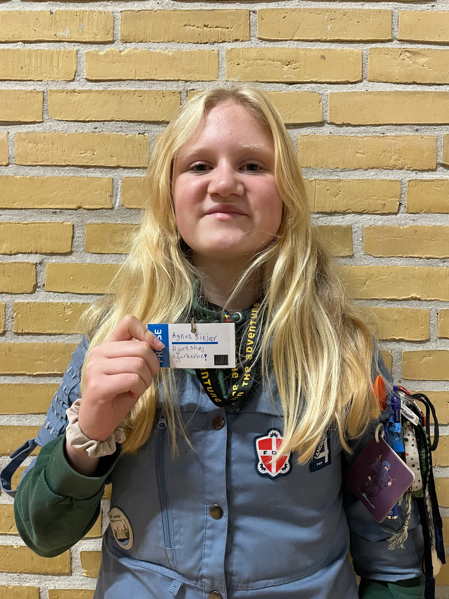
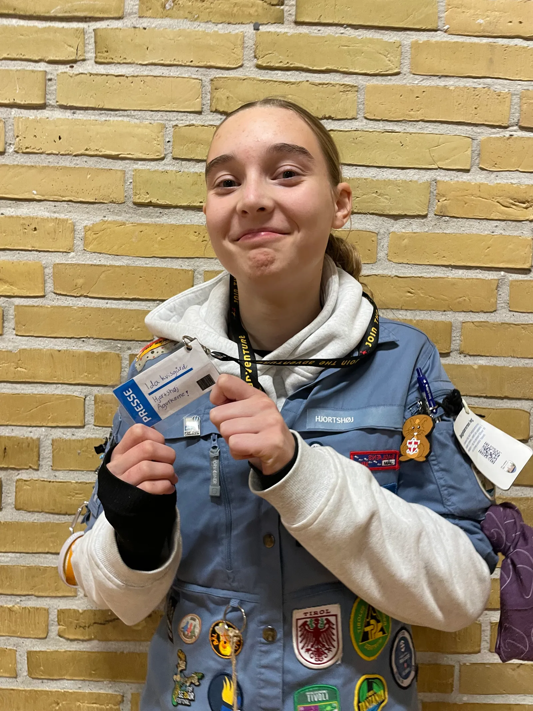
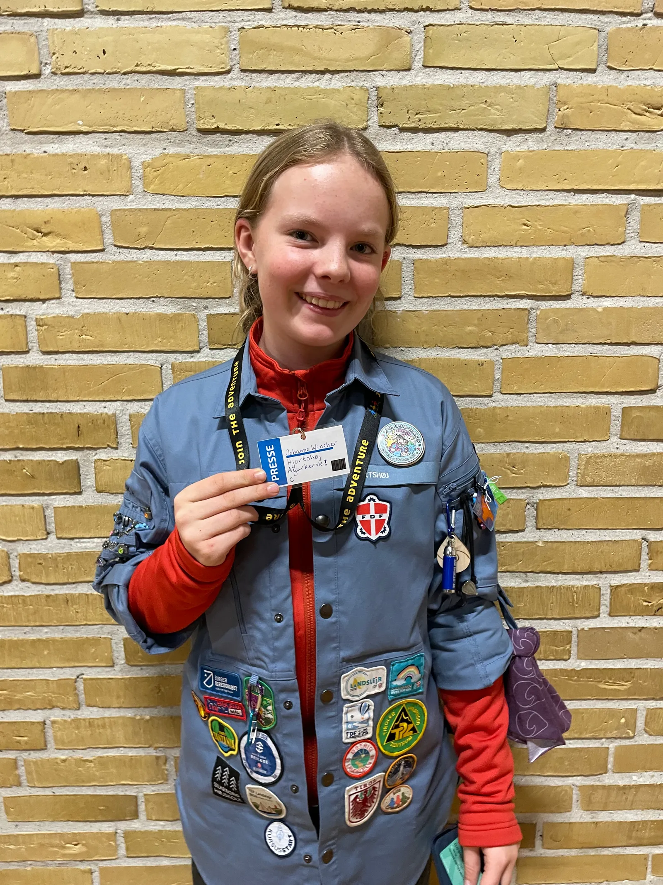
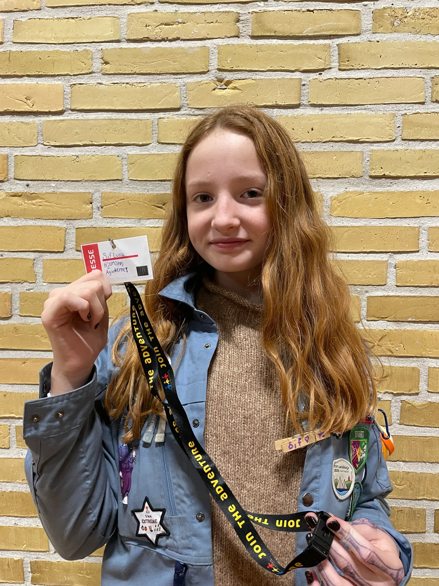
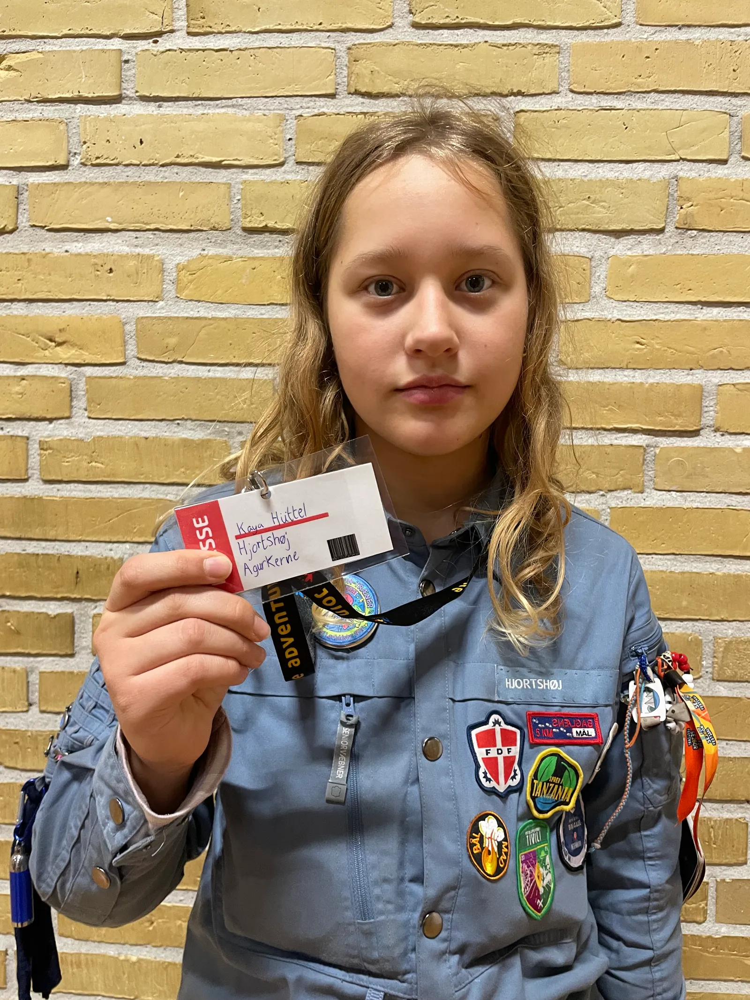
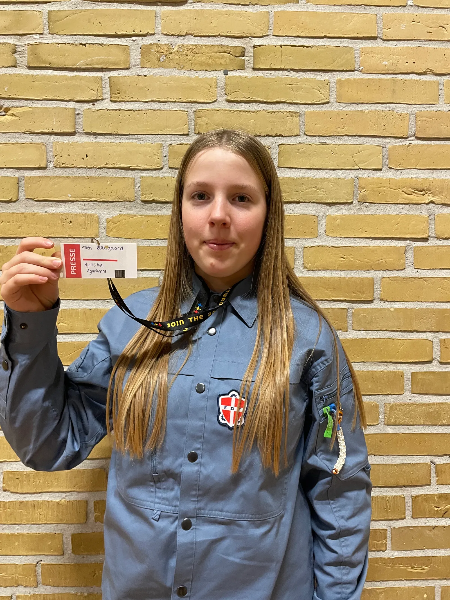
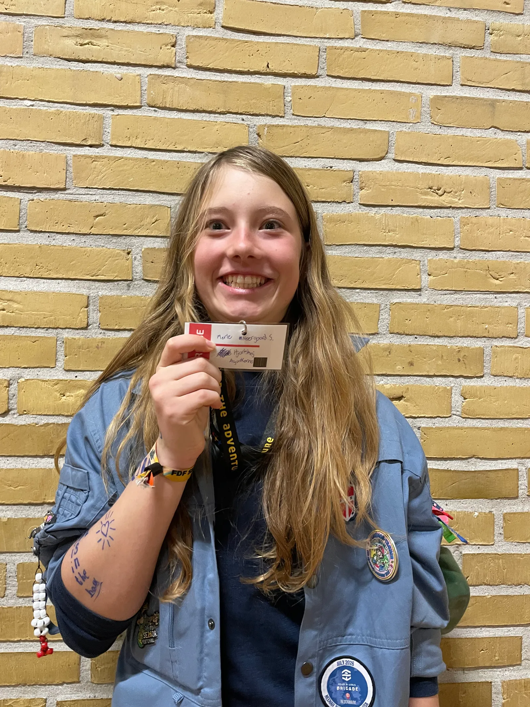

Her er holdet bag den fantastiske avis.

Agnes Sikjær
🫐 Jordbær
Agnes er en af redaktionens rapportere.

Ida Kvisgård
🫐 Hindbær
Ida er redaktionens redaktører.

Johanne Winther
🫐 Jordbær
Johanne er en af redaktionens kamerafolk.

Sif Lucca
🫐 Hindbær
Sif er en af redaktionens rapportere.

Kaya Hüttel
🫐 Hindbær
Kaya er en af redaktionens skrivere.

Ellen Østergaard
🫐 Jordbær
Ellen er en af redaktionens kamerafolk.

Merle Stensdal
🫐 Hindbær
Merle er en af redaktionens lysfolk.